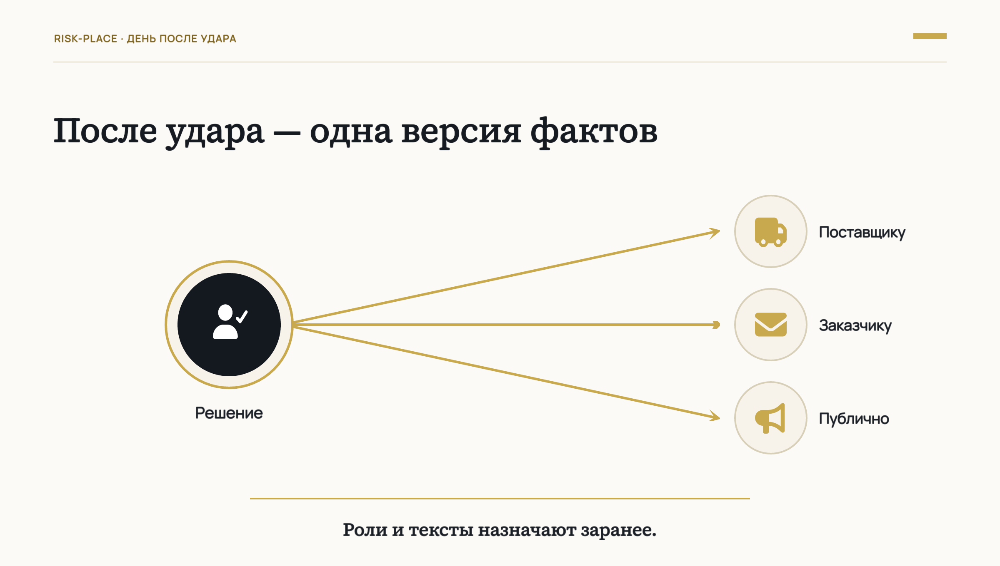

Утро после удара редко дает полную картину. Повреждения еще оценивают, поставщики звонят, заказчики ждут срок, а сотрудники обмениваются разными версиями в мессенджерах. В этот момент особенно важно собрать одну версию подтвержденных фактов и говорить от имени компании согласованно.

Первый час: зафиксируйте то, что известно
Начните с короткой записи: что произошло, какой участок или поток остановлен, есть ли угроза людям и когда состоится следующая оценка. Не заполняйте пробелы предположениями. Если причина еще не подтверждена, ее пока нет в официальном сообщении.
У этой записи должен быть один владелец. Он собирает подтверждения от площадки, охраны, ИТ и руководителей направлений, а затем обновляет общую хронологию. Так решения опираются на одинаковые данные, а не на самую громкую версию в чате.
Один человек решает, другой называет срок
Заранее распределите полномочия. Директор площадки или его заместитель останавливает работу. Владелец договора подтверждает новый срок заказчику. Один представитель отвечает на внешние запросы. У каждой роли нужен заместитель, который знает о своей задаче и уже участвовал в репетиции.
- Решение об остановке фиксируется с временем и именем.
- Новый срок называет только тот, кто получил подтверждение от площадки.
- Внешние комментарии опираются на общую запись фактов.
- Следующее обновление назначается на конкретный час, даже если ответов пока мало.
Поставщику, заказчику и публике — одна логика
Поставщику важно знать, удерживать поставку, менять маршрут или переносить рейс. Заказчику нужен подтвержденный срок и объем. Публике достаточно краткого сообщения о том, что известно, как это влияет на работу и когда появится следующая информация.
Тексты различаются по деталям, но совпадают по фактам. Не обещайте полную отгрузку, пока площадка ее не подтвердила. Не называйте виновника, пока этого не подтвердили компетентные специалисты. Лучше назвать время следующего сообщения и выполнить обещание о связи.
Заготовки снимают лишнее напряжение
Подготовьте короткие шаблоны заранее: внутреннее уведомление, письмо поставщику, письмо заказчику и публичный ответ. Оставьте в них поля для фактов, срока следующего обновления и контакта ответственного. В день происшествия команде останется заполнить их проверенными данными.
Проверить роли и тексты на реалистичном сценарии помогает проверка готовности к атаке БПЛА. Она показывает, кто действительно может остановить выпуск, какой срок можно обещать и где цепочка решений теряет время.
Частые вопросы
Сообщайте только подтвержденные факты: что остановлено, как это влияет на работу и когда будет следующее обновление. Причины и виновников не называйте до подтверждения.
Как только подтверждено влияние на его поставку. Сообщите новый срок только после подтверждения площадки и назначьте время следующего контакта.
Заранее назначенный представитель и его заместитель. Они используют общую хронологию фактов и не добавляют собственных предположений.
Готова ли команда к первому часу кризиса
Планы проверяются не чтением, а сценарием. Диагностика покажет пробелы, корпоративный формат отрабатывает их с вашей командой на ваших процессах.